(Led Zeppelin IV)

Led Zeppelin's discography consists of nine studio albums, four live albums, nine compilation albums, sixteen singles, and eight music downloads. The band often eschewed releasing popular songs as singles and preferred to focus on the strength of their albums. Of the ten songs that reached the Hot 100, four songs contained no mention of their respective titles in the lyrics: Black Dog, D'yer Mak'er, Immigrant Song, and Over the Hills and Far Away.
The band has sold more than 300 million albums worldwide, including 111.5 million certified units in the United States.
| Album Cover | Album Title | Release Date | Record Label | Peak Chart Positions | |
|---|---|---|---|---|---|
| UK | USA | ||||
| 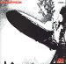 | Led Zeppelin | Atlantic | 6 | 7 | |
| 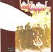 | Led Zeppelin II | Atlantic | 1 | 1 | |
| 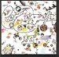 | Led Zeppelin III | Atlantic | 1 | 1 | |
| 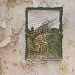 | untitled album (Led Zeppelin IV) |
Atlantic | 1 | 2 | |
| 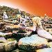 | Houses of the Holy | Atlantic | 1 | 1 | |
|
Physical Graffiti | Swan Song | 1 | 1 | |
| 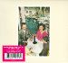 | Presence | Swan Song | 1 | 1 | |
| 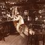 | In Through the Out Door | Swan Song | 1 | 1 | |
| 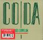 | Coda | Swan Song | 4 | 6 | |
| Album Cover | Album Title | Release Date | Record Label | Peak Chart Positions | |
|---|---|---|---|---|---|
| UK | USA | ||||
| 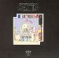 | The Song Remains the Same | Swan Song | 1 | 2 | |
| 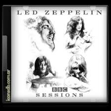 | BBC Sessions | Atlantic | 23 | 12 | |
| How the West Was Won | Atlantic | 5 | 1 | ||
| 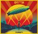 | Celebration Day | Atlantic | 4 | 9 | |